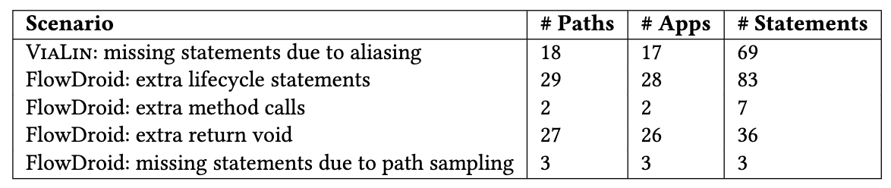
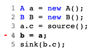
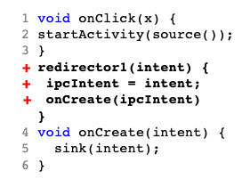
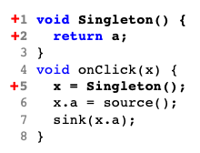
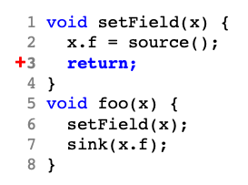
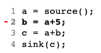
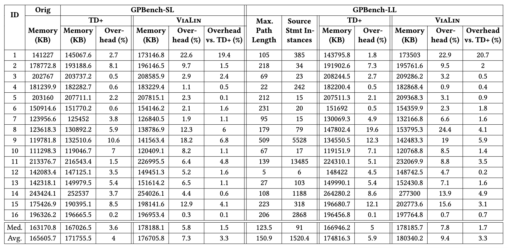
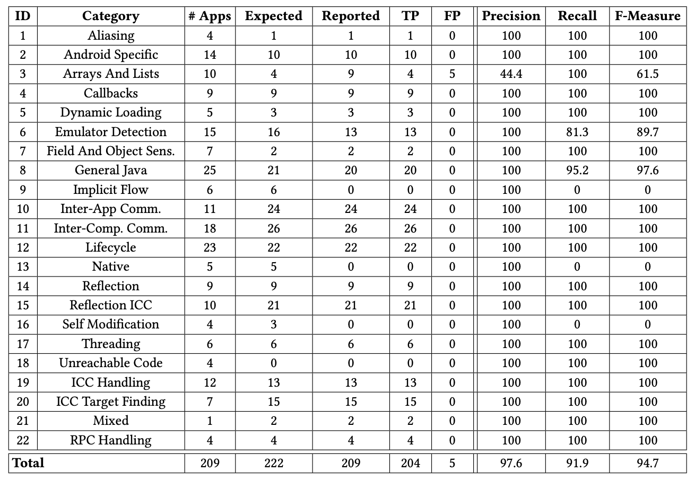
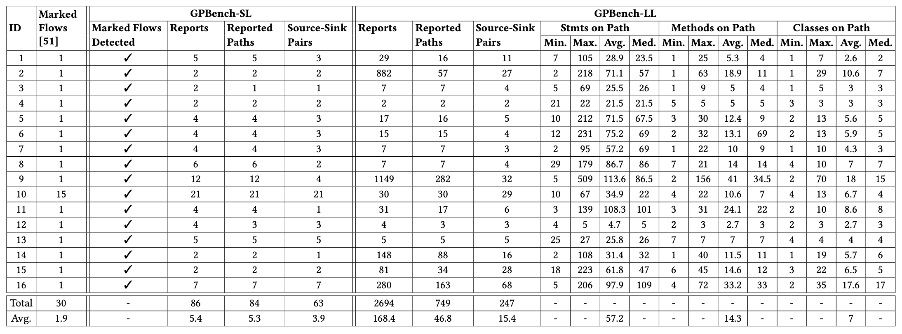

Evaluation Results
All the results can be downloaded here
The results package is organized in the following structure:
.
├── DroidICCBench/
│ ├── FlowDroid/
│ │ ├── Category1.app1.txt/
│ | │ ├── path_1.csv
│ | │ ├── path_2.csv
│ | │ └── ...
│ | ├── Category1.app2.txt/
│ | └── ...
│ └── ViaLin/
│ ├── Category1_app1.big_list.paths/
│ │ ├── path_1.log
│ │ ├── path_2.log
│ │ └── ...
│ ├── Category1_app1.big_list.paths/
│ └── ...
├── GPBench-SL/
│ ├── app1.paths.log
│ ├── app2.paths.log
│ └── ...
└── GPBench-LL/
├── app1.paths.log
├── app2.paths.log
└── ...
DroidBench apps with empty folders have 0 detected paths.
Additional Information on RQ1.2 (Path Construction Accuracy)
This table summarizes the path's differences between FlowDroid and ViaLin for DroidICCBench:

Below are five simplified examples, one example per path difference case:
1. ViaLin: missing statements due to aliasing
By design, ViaLin does not report object aliasing statements on the path. This behavior involved 69 aliasing statements overall, on 18 paths of 17 apps. The figure on the right shows an example: in line 3, a.c is tainted. Line 4 aliases b to a and, thus, the field b.c aliases the tainted field a.c. Then, b.c reaches the sink in line 5.

ViaLin does not include the aliasing statement in its path, reporting only statements in lines 3 and 5, as it tracks the taint of the object field itself, not its containing object. FlowDroid reports the aliasing statements as it performs the analysis statically. Such reports could help the analyst to better understand how the taint reaches the sink.
2. FlowDroid: extra life cycle statements
To connect data flows from one callback to another, FlowDroid employs a model of the lifecycle in the form of dummy methods that calls lifecycle methods in a specific order.

This results in FlowDroid reporting data flows within the dummy methods. This behavior involved 83 dummy statements overall, on 29 paths of 28 apps. The figure on the right shows an example: in line 2, startActivity is called with a tainted intent. FlowDroid inserts a call to a re-director method that propagates this intent into an ipcIntent field, which is used as a parameter for the onCreate which contains the sink at line 5.
ViaLin, as a dynamic analysis tool, does not contain such statements as it taints the intent directly and does not need to model the lifecycle.
3. FlowDroid: extra method calls
In some cases, we observed that FlowDroid includes extra methods that do not propagate any taint. This behavior involved 7 extra statements overall, on 2 paths of 2 apps.

The figure on the right shows an example: in line 5, x is assigned the return of Singleton method call defined in lines 1-3. x.a is tainted at line 6 and arrives at the sink at line 7. Although lines 5 and 2 do not propagate the taint, they are included in FlowDroid's paths.
4. FlowDroid: extra return void
In some cases, we observed that FlowDroid includes extra return void statements that do not propagate any taint. This behavior involved 36 extra statements overall, on 27 paths of 26 apps.

The figure on the right shows an example: in line 2, x.f is tainted, the taint arrives at the sink at line 7. Although line 3 do not propagate the taint, and doesn't even propagate any data, it is included in FlowDroid's paths.
5. FlowDroid: Missing statements due to path sampling
FlowDroid only reports a single witness for each path between source and sink. That is, the tool aborts the path construction after the first route for a given pair of source and sink is found.

Due to that reason, FlowDroid paths contain only the
shortest possible route between the source and sink pair, which
causes it to miss statements on the pass. This occurred in three
paths from three different apps.
Additional Information on RQ2.2 (Memory Overhead)
This table shows the results of the memory overhead experiment on GPBench as described in the paper.

Result Tables from the Paper:
Table 1: RQ1.1: Detection Accuracy on DroidICCBench
This table shows the results of the detection accuracy experiment on DroidICCBench as described in the paper.

Table 2: RQ1.1: Detection Accuracy on GPBench
This table shows the results of the detection accuracy experiment on GPBench as described in the paper.

Table 3: RQ2.1: Time Overhead
This table shows the results of the time overhead experiment on GPBench as described in the paper.